count-regression-vignette.Rmd##Count regression review
There are three basic types of count regression - Poisson, Binomial, and negative binomial. The Poisson distribution falls in the class of exponential family. For a fixed number of trials - Binomial and negative binomial distributions fall under the exponential family as well. These basic count models fall in the class of generalized linear model (GLM) and can all be fit in R using the glm function. Counts with a large number of zeros can also be modeled as a mixture of a count and a Bernoulli distribution. These mixture responses are called Zero-Inflated models and can be fit in R using the zeroinfl function from the pscl package.
The systematic component, \(\eta_i = x_i \cdot \beta\) is linear in the predictors so many of the concepts from linear modeling carry over to generalized linear modeling. This means that model specification and interpretation is the same. The main difference is the link function and the response.
An observation \(Y_i\) over an interval \(j\) follows a Poisson distribution if \(P(Y_i=n)= \frac{\lambda_i^n}{n!}e^{-\lambda_i}\). We often decompose \(\lambda\) into fixed \(\theta\) and random \(\eta_i\) effects, \(\lambda_i=\theta e^{\eta_i}\). A key aspect of a Poisson model is that after accounting for the effect of predictors, the mean must equal the variance. If the mean does not equal the variance, then a transformation might be appropriate or we may need to seek a count response with a better fit like a negative binomial. Another option is to add a dispersion parameter to a Poisson model. We say that our data is over-dispersed when the variance is larger than the mean in our dependent variable. Over-dispersion is a problem if the conditional (residual) variance is larger than the conditional mean. Running an over-dispersed Poisson model will generate understated standard errors. Understated standard errors can lead to erroneous conclusions.
The negative binomial response is described by series of independent trials, each with a probability of success \(p\), \(Z\) be the number of trials until the \(k\) th success. Then: \[P(Z = z) = \binom{z-1}{k-1}p^k (1- p)^{z-k} \;\;\; z = k, k +1, \cdots\] For regression is is usually reparametrized \(Y = Z -k\) and \(p = \frac{1}{1+\alpha}\) then \[P(Y = y) = \binom{y+k-1}{k -1}\frac{\alpha^y}{(1+\alpha)^{y+k}}\] Then we have the convenient representation for the mean and variance \(E[Y] = \mu = k \alpha\) and \(var(Y) = k \alpha+k \alpha^2 = \mu+\frac{\mu^2}{k}\).
There are two ways to check for over-dispersion; the Pearson \(\chi^2\) , and via the dispersion statistic calculated by R. If the variance is equal to the mean, the dispersion statistic would equal one. When the dispersion statistic is larger than one, a negative binomial model may fit better. (Cameron 2012) recommended using robust standard errors for the parameter estimates to control for mild violation of the distribution assumption that the variance equals the mean. The R package sandwich can be used to obtain robust standard errors and calculated the p-values.
There are methods of eliminating or reducing the over-dispersion of the data. Scaling the standard errors and re-weighting the model weight with the inverse square root of the dispersion statistic is one approach. We need to run the model twice - once to calculate the dispersion statistic and a second time with the adjusted weights (standard errors are multiplied by the square root of the dispersion).
The question of choosing between an overdispersed Poisson and a negative binomial model is a little more subtle. (Ver Hoef and Boveng 2007) work out the details of the differences between quasi-Poisson and negative binomial models. The variance of a quasi-Poisson model is a linear function of the mean \(var(Y)=\phi \; \eta=\phi \; x_i \cdot \beta\), $while the variance of a negative binomial model is a quadratic function of the mean \(var(Y) = k \alpha+k \alpha^2 = \mu+\frac{\mu^2}{k}\). These variance relationships affect the weights in the iteratively weighted least-squares (IRLS) algorithm of fitting models to data. Because the variance is a function of the mean, large and small counts get weighted differently in quasi-Poisson and negative binomial regression.
Count data are essentially measures of frequency. There’s a connection between counts and time to events. We see this in the relationinship between the exponential and Poisson distribution. Let \(N_t\) be the number of events during time period \(t\), and \(X_t\) the time it takes for one additional event to arrive assuming that there was an event at time \(t\) i.e. \((X_t> x) \implies (N_t=N_{t+x})\) The event on the left captures the condtion that no event occurs in the time interval \([t,t+x]\) which implies that our count of the number of events at time \(t+x\) is identical to the count at time t which is the event on the right. Now using \(P(X_t \leq x)=1-P(X_t>x)\) and the above we can write \(P(X_t > x)=1-P(N_{t+x}-N_t=0\). Since \(P(N_{t+x}-N_t=0)=P(N_x=0)\) Now let \(P\) be a Poisson pmf the above where \(\lambda\) is the averx number of events per time unit and \(x\) a quantity of time units, then \(P(N_{t+x}-N_t=0)=\frac{\lambda x^0}{0!} e^{-\lambda x}=e^{-\lambda x}\) Writing another way \(P(X_t \leq x)=1-e^{-\lambda x}\) which is the cdf of a exponential random variable.
Count data are intrinsically event frequency measures. There is a connection with repeated time to event processes. Events are binned within time intervals for a variety of practical reasons. Time intervals are generally of fixed length, but this is not necessarily always the case. Count data can be viewed as driven by an underlying hazard, where the hazard is the instantaneous rate of the events. Investigating how the hazard varies with covariates is one of the points of count modeling. If the hazard is time-varying, then binning events in time intervals dilutes information. In this case, we may - and often will be- better off fitting time to events model.
Looking at \(\lambda\) as a piecwise constant rate function allows us to establish the relationship between the Poisson and hazard model. Focusing on the probability of a zero event within an interval \([t_{j-1},t_j]\) when the hazard is known and constant. We have \[P(Y_i=0 \in [t_{j-1},t_j])=e^{-\lambda_i}\] which can also be written in terms of the hazard function \[P(Y_i=0)=S(t_j)=e^{-\int_{t_{j-1}}^{t_j}h_i(u) du} = e^{ h_i (t_j-t_{j-1})}\] @[Holford] showed the mathematical equivalence between piecewise hazard models and the Poisson count regression.
#Univariate Count Model - \(y \sim x\)
In this section, we fit count models to the synthetic equidispersed Poisson data. After looking at the baseline models, we investigate how overdispersed and zero-inflated data is fit.
# sample size
n <- 1000
# regression coefficients
beta0 <- 1
beta1 <- 0.2
# generate covariate values
x <- runif(n = n, min = 0, max = 10)
# compute mu's
mu <- exp(beta0 + beta1 * x)
# generate Y-values
y <- rpois(n = n, lambda = mu)
# data set
modelling_data <- data.frame(y = y, x = x)
pander(summarize(modelling_data), caption = "Synthtic Data : Summary Statistics")| N | Mean | SD | Min | Q1 | Median | Q3 | Max | |||
|---|---|---|---|---|---|---|---|---|---|---|
| y | 1000 | 8.66 | 5.54 | 0 | 4 | 7 | 12 | 27 | ||
| x | 1000 | 4.97 | 2.92 | 0 | 2.32 | 4.9 | 7.46 | 10 |
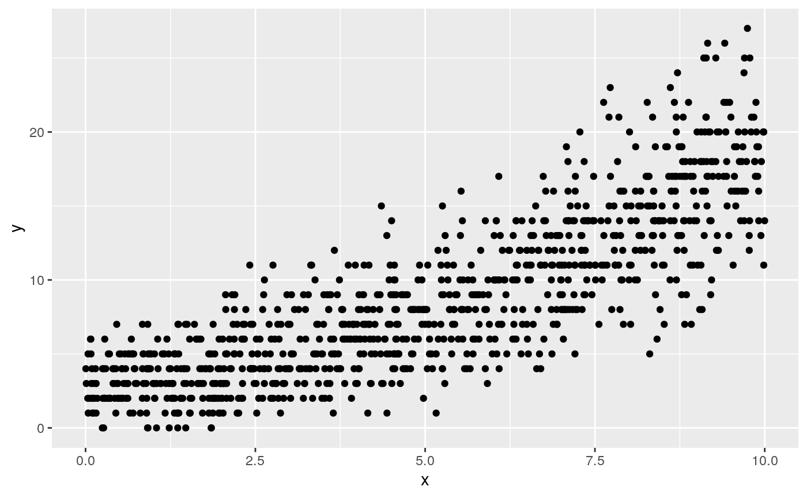
univariate.features <- c("x")
i = 1
univariate.model.formula <- as.formula(paste("y ~ ", univariate.features[i],
sep = ""))
model.string <- paste("poisson univariate ", univariate.model.formula, sep = "")###Fit Poisson model of \(y \sim x\).
m1.poisson <- glm(univariate.model.formula, data = modelling_data, family = poisson)
pander(summary(m1.poisson))| Estimate | Std. Error | z value | Pr(>|z|) | |
|---|---|---|---|---|
| (Intercept) | 1.046 | 0.02839 | 36.86 | 2.293e-297 |
| x | 0.1928 | 0.004031 | 47.84 | 0 |
(Dispersion parameter for poisson family taken to be 1 )
| Null deviance: | 3557 on 999 degrees of freedom |
| Residual deviance: | 1050 on 998 degrees of freedom |
Looking at the predicted counts and doing some QA on our understanding of the model.
beta_0 <- m1.poisson$coefficients["(Intercept)"]
beta_1 <- m1.poisson$coefficients["x"]
predicted.counts.irr <- exp(predict(object = m1.poisson))
calculated.predicted.irr <- exp(beta_0 + beta_1 * modelling_data$x)
# ggplot(data=data.frame(predicted.counts=predicted.counts.irr,
# calculated.predicted=calculated.predicted.irr),aes(x=calculated.predicted.irr,y=predicted.counts.irr))+geom_point()+ggtitle('QA
# plot - predicted versus hand calculated counts in rr scale')
Call: glm.nb(formula = univariate.model.formula, data = modelling_data,
init.theta = 26997.57846, link = log)
Coefficients:
(Intercept) x
1.0463 0.1929
Degrees of Freedom: 999 Total (i.e. Null); 998 Residual
Null Deviance: 3556
Residual Deviance: 1049 AIC: 4827The Poisson and negative binomial (NB) model are nested: Poisson is a particular case with \(\theta = \infty\). So a likelihood ratio test comparing the two models is testing the null hypothesis that \(\theta = \infty\) against the alternative that \(\theta < \infty\).
The form of the model equation for negative binomial regression is the same as that for Poisson regression. The log of the outcome is predicted with a linear combination of the predictors. The coefficients have an additive effect in the \(ln(Y)\) scale and the incident rate ratios (IRR) have a multiplicative effect in the \(Y\) scale. The dispersion parameter in negative binomial regression does not affect the expected counts, but it does change the estimated variance of the expected counts.
| #Df | LogLik | Df | Chisq | Pr(>Chisq) |
|---|---|---|---|---|
| 2 | -2410 | NA | NA | NA |
| 3 | -2410 | 1 | 0.00221 | 0.9625 |
We apply a Vuong (Vuong 1989) test of Poisson versus negative binomial models. Although the typical application of this test is for non-nested models, it should still be a valid way to compare the Poisson and negative binomial models. The Vuong non-nested test is based on a comparison of the predicted probabilities of two models that do not nest. Under the null that the models are indistinguishable, the test statistic is asymptotically distributed standard normal. The function will fail if the models do not contain identical values in their respective components named y (the value of the response being modeled) - hence it’s usefulness for comparing count regression models.
A large, positive test statistic provides evidence of the superiority of model 1 over model 2, while a large, negative test statistic is evidence of the superiority of model 2 over model 1.
Vuong Non-Nested Hypothesis Test-Statistic:
(test-statistic is asymptotically distributed N(0,1) under the
null that the models are indistinguishible)
-------------------------------------------------------------
Vuong z-statistic H_A p-value
Raw 0.1415046 model1 > model2 0.44374
AIC-corrected 0.1415046 model1 > model2 0.44374
BIC-corrected 0.1415046 model1 > model2 0.44374est.poisson <- cbind(Estimate = coef(m1.poisson), confint(m1.poisson))
pander(est.poisson, caption = "Poisson")| Estimate | 2.5 % | 97.5 % | |
|---|---|---|---|
| (Intercept) | 1.046 | 0.9904 | 1.102 |
| x | 0.1928 | 0.185 | 0.2008 |
est.negbin <- cbind(Estimate = coef(m1.negbin), confint(m1.negbin))
pander(est.negbin, caption = "negative binomial")| Estimate | 2.5 % | 97.5 % | |
|---|---|---|---|
| (Intercept) | 1.046 | 0.9904 | 1.102 |
| x | 0.1929 | 0.185 | 0.2008 |
| Estimate | 2.5 % | 97.5 % | |
|---|---|---|---|
| (Intercept) | 2.847 | 2.692 | 3.009 |
| x | 1.213 | 1.203 | 1.222 |
| Estimate | 2.5 % | 97.5 % | |
|---|---|---|---|
| (Intercept) | 2.847 | 2.692 | 3.009 |
| x | 1.213 | 1.203 | 1.222 |
Plotting the standardized deviance residuals to the predicted counts is another method of determining which model, Poisson or negative binomial, is a better fit for the data. The series of waves in the graph is not an unusual structure when graphing count model residuals and predicted outcomes. A good fitting model will have the majority of the points between negative 2 and positive 2 on the y-axis. There should be few points below negative 3 and above positive 3.
plotTitle <- TeX(paste("residuals vs fitted : $$", gsub("_", "-", as.character(univariate.model.formula)),
"$$ model = glm poisson", sep = ""))
ggplot(data = data.frame(fitted = fitted(m1.poisson), residuals = residuals(m1.poisson))) +
geom_point(aes(x = fitted, y = residuals)) + ggtitle(plotTitle)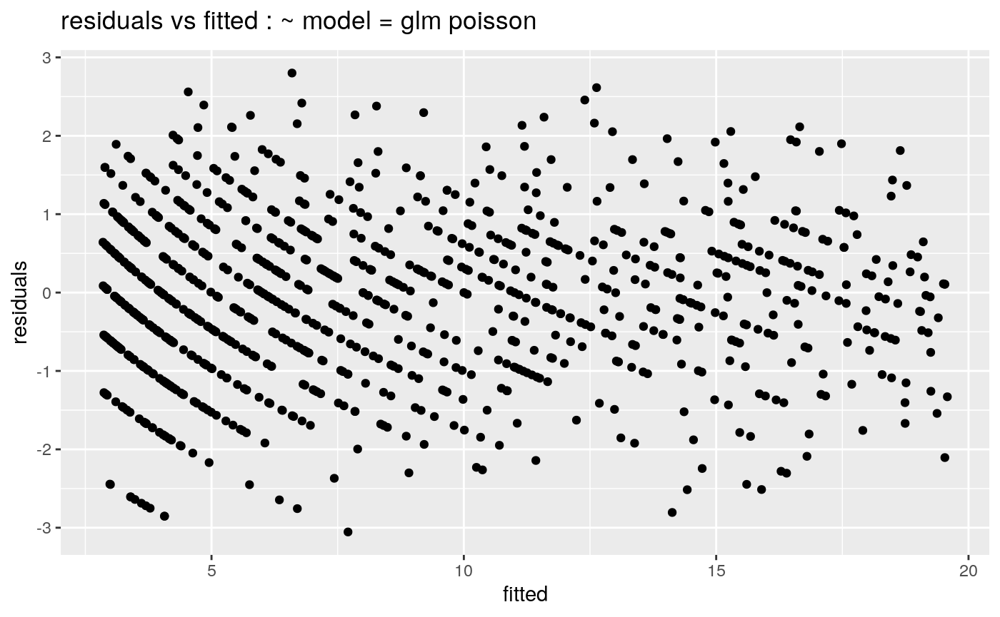
plotTitle <- TeX(paste("residuals vs fitted : $$", gsub("_", "-", as.character(univariate.model.formula)),
"$$ model = MASS glm.nb Negative Binomial", sep = ""))
ggplot(data = data.frame(fitted = fitted(m1.negbin), residuals = residuals(m1.negbin))) +
geom_point(aes(x = fitted, y = residuals)) + ggtitle(plotTitle)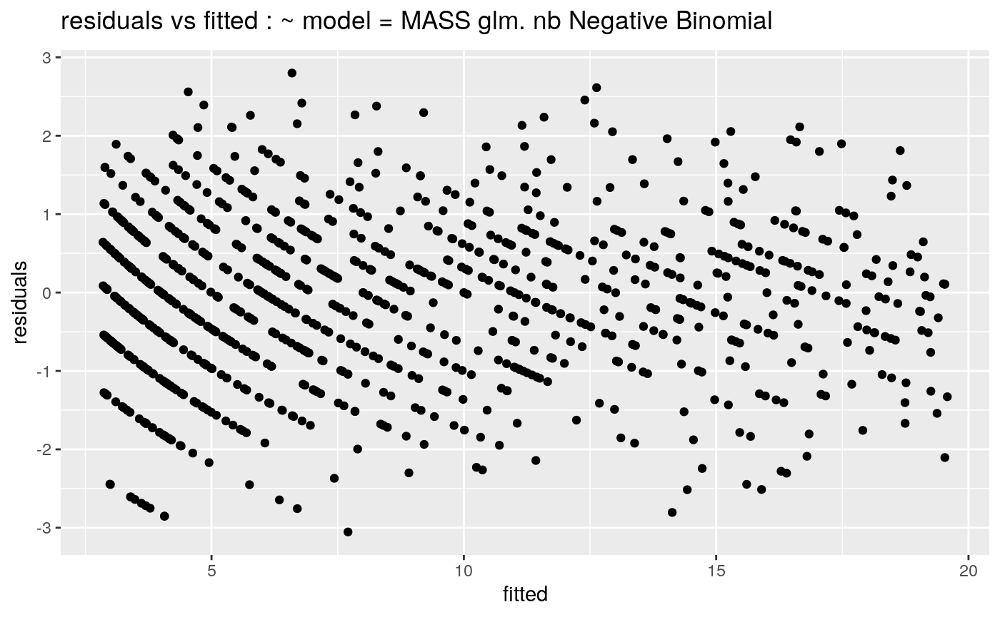
###Looking at the robust SE corrected Poisson coefficients provided by the sandwich package
library(sandwich)
cov.m1 <- vcovHC(m1.poisson, type = "HC0")
std.err <- sqrt(diag(cov.m1))
r.est <- cbind(Estimate = coef(m1.poisson), `Robust SE` = std.err, `Pr(>|z|)` = 2 *
pnorm(abs(coef(m1.poisson)/std.err), lower.tail = FALSE), LL = coef(m1.poisson) -
1.96 * std.err, UL = coef(m1.poisson) + 1.96 * std.err)
pander(r.est, caption = "SE corrected coefficients")| Estimate | Robust SE | Pr(>|z|) | LL | UL | |
|---|---|---|---|---|---|
| (Intercept) | 1.046 | 0.02813 | 7.013e-303 | 0.9912 | 1.101 |
| x | 0.1928 | 0.003953 | 0 | 0.1851 | 0.2006 |
\[\phi=\frac{X^2}{n-p} = \frac{\sum (y_i- \hat\mu_i)^2 / \hat\mu_i}{n-p}\]
dp <- sum(residuals(m1.poisson, type = "pearson")^2)/m1.poisson$df.res
names(dp) <- "dispersion parameter"
dpdispersion parameter
1.000702
Call:
glm(formula = univariate.model.formula, family = poisson, data = modelling_data)
Deviance Residuals:
Min 1Q Median 3Q Max
-3.05384 -0.73679 -0.04463 0.63152 2.80036
Coefficients:
Estimate Std. Error z value Pr(>|z|)
(Intercept) 1.046338 0.028399 36.84 <2e-16 ***
x 0.192849 0.004032 47.83 <2e-16 ***
---
Signif. codes: 0 '***' 0.001 '**' 0.01 '*' 0.05 '.' 0.1 ' ' 1
(Dispersion parameter for poisson family taken to be 1.000702)
Null deviance: 3557.0 on 999 degrees of freedom
Residual deviance: 1049.8 on 998 degrees of freedom
AIC: 4824.6
Number of Fisher Scoring iterations: 4Notice that the estimation of the dispersion and the regression parameters is independent, so choosing a dispersion other than one has no effect on the regression parameter estimates.
We can also achieve the same effect by fitting a quasi-Poisson model directly using glm.
m1.quasipoisson <- glm(univariate.model.formula, data = modelling_data, family = quasipoisson)
summary(m1.quasipoisson)
Call:
glm(formula = univariate.model.formula, family = quasipoisson,
data = modelling_data)
Deviance Residuals:
Min 1Q Median 3Q Max
-3.05384 -0.73679 -0.04463 0.63152 2.80036
Coefficients:
Estimate Std. Error t value Pr(>|t|)
(Intercept) 1.046338 0.028400 36.84 <2e-16 ***
x 0.192849 0.004032 47.83 <2e-16 ***
---
Signif. codes: 0 '***' 0.001 '**' 0.01 '*' 0.05 '.' 0.1 ' ' 1
(Dispersion parameter for quasipoisson family taken to be 1.000712)
Null deviance: 3557.0 on 999 degrees of freedom
Residual deviance: 1049.8 on 998 degrees of freedom
AIC: NA
Number of Fisher Scoring iterations: 4We can not compare the quasi-Poisson and negative binomial models. The former is not fit using maximum likelihood, hence the Vuong test, which is a likelihood ratio based test, fails.
m1.poisson.zi <- zeroinfl(univariate.model.formula, data = modelling_data, dist = "poisson")
m1.negbin.zi <- zeroinfl(univariate.model.formula, data = modelling_data, dist = "negbin")
print(summary(m1.poisson.zi))
Call:
zeroinfl(formula = univariate.model.formula, data = modelling_data,
dist = "poisson")
Pearson residuals:
Min 1Q Median 3Q Max
-2.42823 -0.70628 -0.04063 0.65261 3.26810
Count model coefficients (poisson with log link):
Estimate Std. Error z value Pr(>|z|)
(Intercept) 1.048459 0.029931 35.03 <2e-16 ***
x 0.192579 0.004209 45.75 <2e-16 ***
Zero-inflation model coefficients (binomial with logit link):
Estimate Std. Error z value Pr(>|z|)
(Intercept) -4.8130 4.7644 -1.010 0.312
x -0.9657 1.2421 -0.777 0.437
---
Signif. codes: 0 '***' 0.001 '**' 0.01 '*' 0.05 '.' 0.1 ' ' 1
Number of iterations in BFGS optimization: 10
Log-likelihood: -2410 on 4 Df
Call:
zeroinfl(formula = univariate.model.formula, data = modelling_data,
dist = "negbin")
Pearson residuals:
Min 1Q Median 3Q Max
-2.42835 -0.70473 -0.04444 0.65479 3.27260
Count model coefficients (negbin with log link):
Estimate Std. Error z value Pr(>|z|)
(Intercept) 1.04638 0.02838 36.872 <2e-16 ***
x 0.19284 0.00403 47.857 <2e-16 ***
Log(theta) 11.09800 44.83116 0.248 0.804
Zero-inflation model coefficients (binomial with logit link):
Estimate Std. Error z value Pr(>|z|)
(Intercept) -9.0997 NA NA NA
x -0.8365 7.9348 -0.105 0.916
---
Signif. codes: 0 '***' 0.001 '**' 0.01 '*' 0.05 '.' 0.1 ' ' 1
Theta = 66038.7941
Number of iterations in BFGS optimization: 23
Log-likelihood: -2410 on 5 DfFitted versus residuals for the zero-inflated class of model.
plot(residuals(m1.poisson.zi) ~ fitted(m1.poisson.zi), pch = ".", main = TeX(paste("residuals vs fitted : $$",
gsub("_", "-", as.character(univariate.model.formula)), "$$ model = zeroinfl poisson",
sep = "")))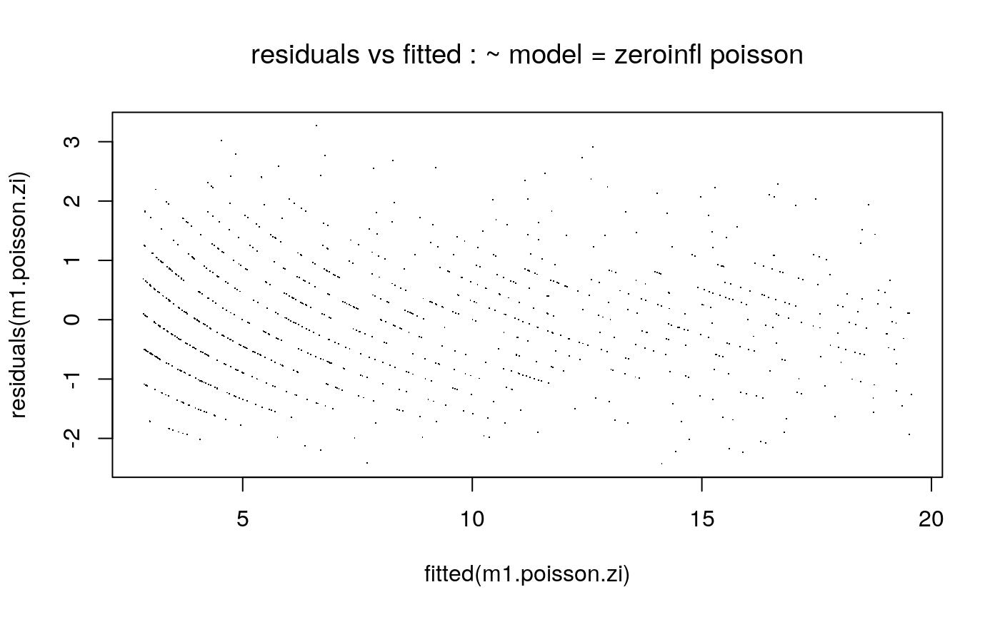
plot(residuals(m1.negbin.zi) ~ fitted(m1.negbin.zi), pch = ".", main = TeX(paste("residuals vs fitted : $$",
gsub("_", "-", as.character(univariate.model.formula)), "$$ model = zeroinfl negative binomial",
sep = "")))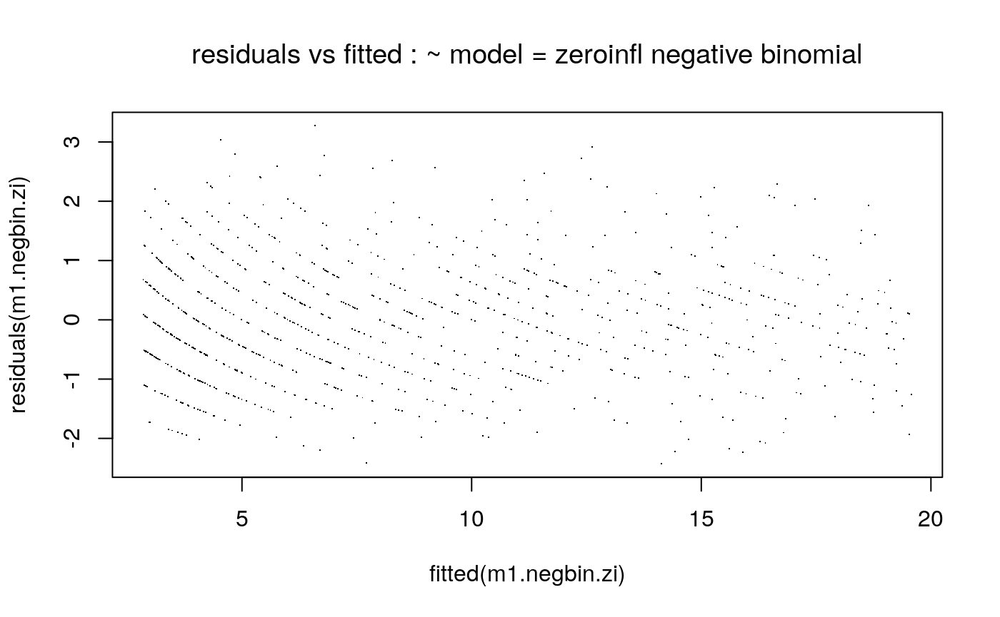
Vuong Non-Nested Hypothesis Test-Statistic:
(test-statistic is asymptotically distributed N(0,1) under the
null that the models are indistinguishible)
-------------------------------------------------------------
Vuong z-statistic H_A p-value
Raw 0.2311493 model1 > model2 0.4086
AIC-corrected 0.2311493 model1 > model2 0.4086
BIC-corrected 0.2311493 model1 > model2 0.4086
NULL#Dispersed Poisson Data
x <- x #disperse the data
mu <- exp(beta0 + beta1 * x)
y <- 3 * rpois(n = n, lambda = mu)
modelling_data_dispersed <- data.frame(y = y, x = x)
pander(summarize(modelling_data_dispersed), caption = "Synthtic Data : Summary Statistics")| N | Mean | SD | Min | Q1 | Median | Q3 | Max | |||
|---|---|---|---|---|---|---|---|---|---|---|
| y | 1000 | 26.12 | 17.09 | 0 | 12 | 21 | 36 | 96 | ||
| x | 1000 | 4.97 | 2.92 | 0 | 2.32 | 4.9 | 7.46 | 10 |
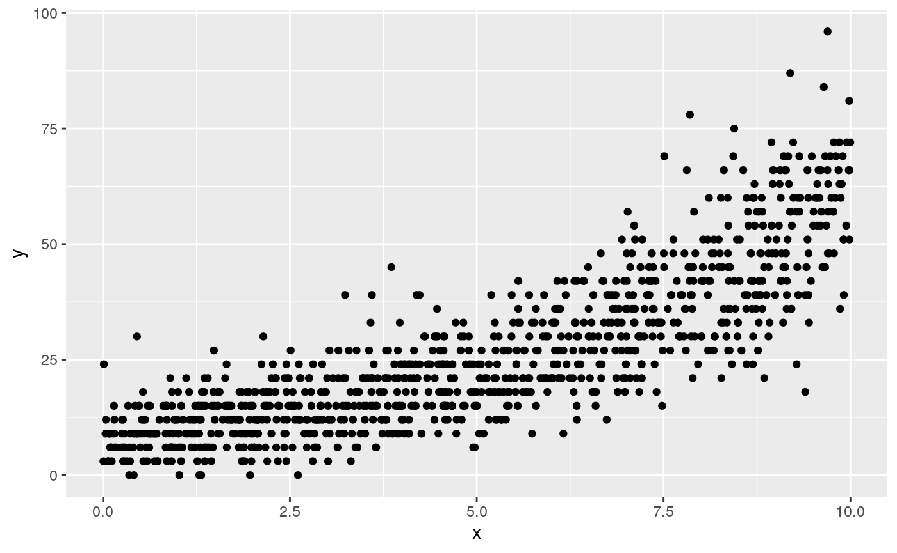
bin.count <- 3
h.y <- invisible(hist(modelling_data_dispersed$x, breaks = bin.count, plot = FALSE))
b <- h.y["breaks"]
bc <- rapply(b, c)
x_factor <- cut(modelling_data_dispersed$x, bc)
levels(x_factor) <- c(1:length(levels(x_factor)))
modelling_data_dispersed$x_factor <- x_factor
m1.poisson <- glm(univariate.model.formula, data = modelling_data_dispersed,
family = poisson)
pander(summary(m1.poisson))| Estimate | Std. Error | z value | Pr(>|z|) | |
|---|---|---|---|---|
| (Intercept) | 2.11 | 0.01652 | 127.7 | 0 |
| x | 0.1991 | 0.002334 | 85.28 | 0 |
(Dispersion parameter for poisson family taken to be 1 )
| Null deviance: | 10903 on 999 degrees of freedom |
| Residual deviance: | 2892 on 998 degrees of freedom |
beta_0 <- m1.poisson$coefficients["(Intercept)"]
beta_1 <- m1.poisson$coefficients["x"]
predicted.counts.irr <- exp(predict(object = m1.poisson))
calculated.predicted.irr <- exp(beta_0 + beta_1 * modelling_data_dispersed$x)
# ggplot(data=data.frame(predicted.counts=predicted.counts.irr,
# calculated.predicted=calculated.predicted.irr),aes(x=calculated.predicted.irr,y=predicted.counts.irr))+geom_point()+ggtitle('QA
# plot - predicted versus hand calculated counts in rr scale')
m1.negbin <- glm.nb(univariate.model.formula, data = modelling_data_dispersed)
print(m1.negbin)
Call: glm.nb(formula = univariate.model.formula, data = modelling_data_dispersed,
init.theta = 12.83986187, link = log)
Coefficients:
(Intercept) x
2.1130 0.1985
Degrees of Freedom: 999 Total (i.e. Null); 998 Residual
Null Deviance: 3822
Residual Deviance: 1136 AIC: 7019| #Df | LogLik | Df | Chisq | Pr(>Chisq) |
|---|---|---|---|---|
| 2 | -3871 | NA | NA | NA |
| 3 | -3506 | 1 | 730.1 | 8.345e-161 |
Vuong Non-Nested Hypothesis Test-Statistic:
(test-statistic is asymptotically distributed N(0,1) under the
null that the models are indistinguishible)
-------------------------------------------------------------
Vuong z-statistic H_A p-value
Raw -8.740638 model2 > model1 < 2.22e-16
AIC-corrected -8.740638 model2 > model1 < 2.22e-16
BIC-corrected -8.740638 model2 > model1 < 2.22e-16est.poisson <- cbind(Estimate = coef(m1.poisson), confint(m1.poisson))
pander(est.poisson, caption = "Poisson")| Estimate | 2.5 % | 97.5 % | |
|---|---|---|---|
| (Intercept) | 2.11 | 2.077 | 2.142 |
| x | 0.1991 | 0.1945 | 0.2036 |
est.negbin <- cbind(Estimate = coef(m1.negbin), confint(m1.negbin))
pander(est.negbin, caption = "negative binomial")| Estimate | 2.5 % | 97.5 % | |
|---|---|---|---|
| (Intercept) | 2.113 | 2.065 | 2.161 |
| x | 0.1985 | 0.1908 | 0.2062 |
plotTitle <- TeX(paste("residuals vs fitted : $$", gsub("_", "-", as.character(univariate.model.formula)),
"$$ model = glm poisson", sep = ""))
ggplot(data = data.frame(fitted = fitted(m1.poisson), residuals = residuals(m1.poisson))) +
geom_point(aes(x = fitted, y = residuals)) + ggtitle(plotTitle)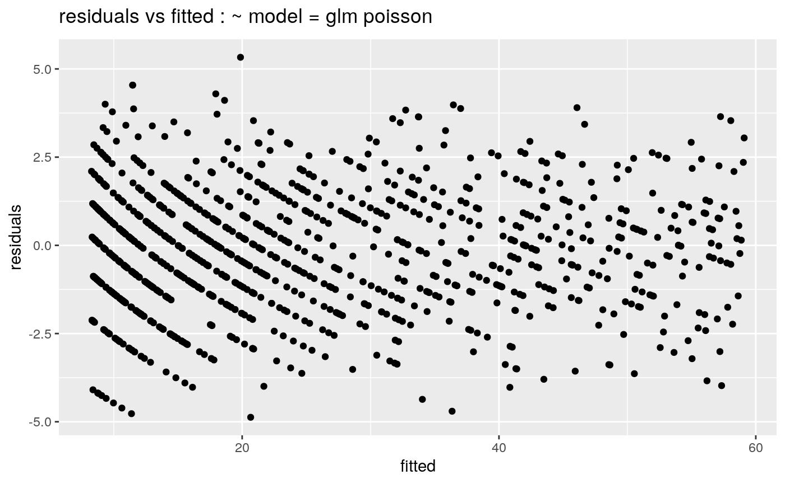
plotTitle <- TeX(paste("residuals vs fitted : $$", gsub("_", "-", as.character(univariate.model.formula)),
"$$ model = MASS glm.nb Negative Binomial", sep = ""))
ggplot(data = data.frame(fitted = fitted(m1.negbin), residuals = residuals(m1.negbin))) +
geom_point(aes(x = fitted, y = residuals)) + ggtitle(plotTitle)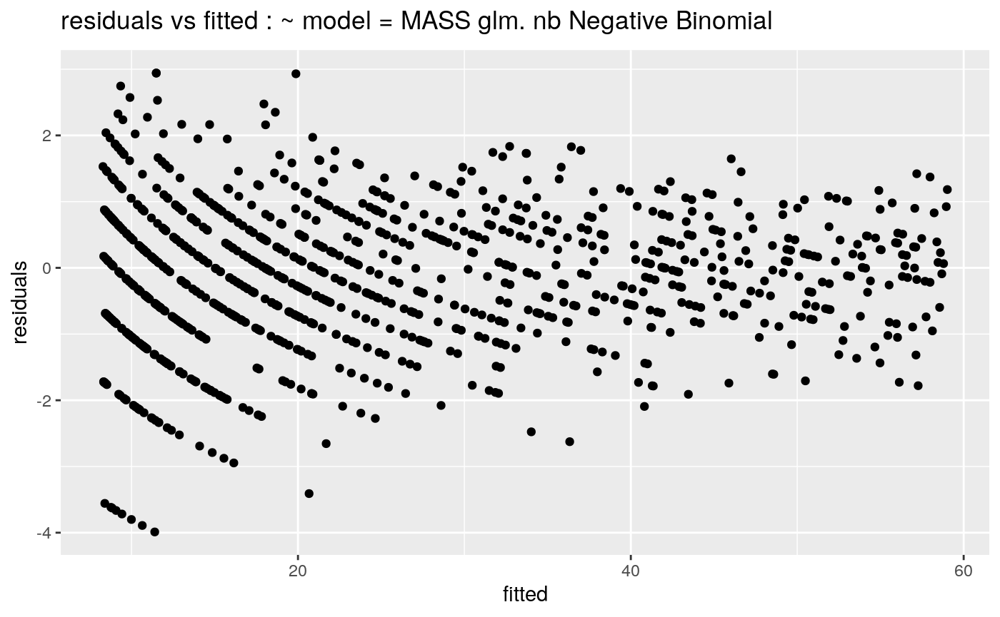
library(sandwich)
cov.m1 <- vcovHC(m1.poisson, type = "HC0")
std.err <- sqrt(diag(cov.m1))
r.est <- cbind(Estimate = coef(m1.poisson), `Robust SE` = std.err, `Pr(>|z|)` = 2 *
pnorm(abs(coef(m1.poisson)/std.err), lower.tail = FALSE), LL = coef(m1.poisson) -
1.96 * std.err, UL = coef(m1.poisson) + 1.96 * std.err)
pander(r.est, caption = "SE corrected coefficients")| Estimate | Robust SE | Pr(>|z|) | LL | UL | |
|---|---|---|---|---|---|
| (Intercept) | 2.11 | 0.02758 | 0 | 2.056 | 2.164 |
| x | 0.1991 | 0.003937 | 0 | 0.1913 | 0.2068 |
dp <- sum(residuals(m1.poisson, type = "pearson")^2)/m1.poisson$df.res
names(dp) <- "dispersion parameter"
dpdispersion parameter
2.821115
Call:
glm(formula = univariate.model.formula, family = poisson, data = modelling_data_dispersed)
Deviance Residuals:
Min 1Q Median 3Q Max
-5.6393 -1.2734 -0.0754 1.0623 5.4886
Coefficients:
Estimate Std. Error z value Pr(>|z|)
(Intercept) 2.109631 0.027751 76.02 <2e-16 ***
x 0.199059 0.003921 50.77 <2e-16 ***
---
Signif. codes: 0 '***' 0.001 '**' 0.01 '*' 0.05 '.' 0.1 ' ' 1
(Dispersion parameter for poisson family taken to be 2.821115)
Null deviance: 10903 on 999 degrees of freedom
Residual deviance: 2892 on 998 degrees of freedom
AIC: 7746.7
Number of Fisher Scoring iterations: 4Notice that the estimation of the dispersion and the regression parameters is independent, so choosing a dispersion other than one does not affect the regression parameter estimates.
We can also achieve the same effect by fitting a quasi-Poisson model directly using glm.
m1.quasipoisson <- glm(univariate.model.formula, data = modelling_data_dispersed,
family = quasipoisson)
summary(m1.quasipoisson)
Call:
glm(formula = univariate.model.formula, family = quasipoisson,
data = modelling_data_dispersed)
Deviance Residuals:
Min 1Q Median 3Q Max
-5.6393 -1.2734 -0.0754 1.0623 5.4886
Coefficients:
Estimate Std. Error t value Pr(>|t|)
(Intercept) 2.109631 0.027751 76.02 <2e-16 ***
x 0.199059 0.003921 50.77 <2e-16 ***
---
Signif. codes: 0 '***' 0.001 '**' 0.01 '*' 0.05 '.' 0.1 ' ' 1
(Dispersion parameter for quasipoisson family taken to be 2.821134)
Null deviance: 10903 on 999 degrees of freedom
Residual deviance: 2892 on 998 degrees of freedom
AIC: NA
Number of Fisher Scoring iterations: 4plot(residuals(m1.quasipoisson) ~ fitted(m1.quasipoisson), pch = ".", main = TeX(paste("residuals vs fitted : $$",
gsub("_", "-", as.character(univariate.model.formula)), "$$ model = quasi-Poisson",
sep = "")))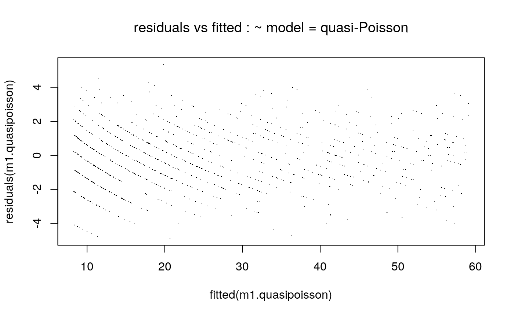
n <- 600
x <- runif(n = n, min = 0, max = 10)
mu <- exp(beta0 + beta1 * x)
y <- rpois(n = n, lambda = mu)
n0 <- 400
x0 <- runif(n = n0, min = 0, max = 3)
y0 <- rep(0, 400)
modelling_data_zeroinflated <- data.frame(y = c(y0, y), x = c(x0, x))
ggplot(data = modelling_data_zeroinflated) + geom_point(aes(x = x, y = y))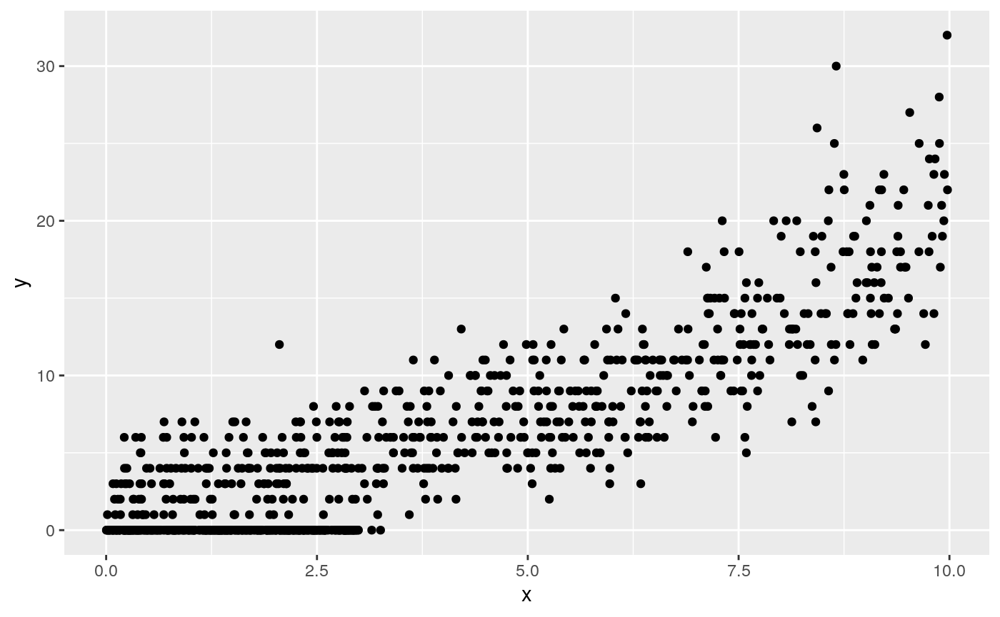
m1.poisson.zi <- zeroinfl(univariate.model.formula, data = modelling_data_zeroinflated,
dist = "poisson")
m1.negbin.zi <- zeroinfl(univariate.model.formula, data = modelling_data_zeroinflated,
dist = "negbin")
print(summary(m1.poisson.zi))
Call:
zeroinfl(formula = univariate.model.formula, data = modelling_data_zeroinflated,
dist = "poisson")
Pearson residuals:
Min 1Q Median 3Q Max
-2.0090 -0.6634 -0.3356 0.5800 4.7714
Count model coefficients (poisson with log link):
Estimate Std. Error z value Pr(>|z|)
(Intercept) 0.992692 0.038495 25.79 <2e-16 ***
x 0.202937 0.005518 36.77 <2e-16 ***
Zero-inflation model coefficients (binomial with logit link):
Estimate Std. Error z value Pr(>|z|)
(Intercept) 1.98048 0.16190 12.23 <2e-16 ***
x -0.88209 0.06316 -13.97 <2e-16 ***
---
Signif. codes: 0 '***' 0.001 '**' 0.01 '*' 0.05 '.' 0.1 ' ' 1
Number of iterations in BFGS optimization: 10
Log-likelihood: -1830 on 4 Df
Call:
zeroinfl(formula = univariate.model.formula, data = modelling_data_zeroinflated,
dist = "negbin")
Pearson residuals:
Min 1Q Median 3Q Max
-2.0084 -0.6631 -0.3353 0.5797 4.7734
Count model coefficients (negbin with log link):
Estimate Std. Error z value Pr(>|z|)
(Intercept) 0.99291 0.03850 25.790 <2e-16 ***
x 0.20291 0.00552 36.759 <2e-16 ***
Log(theta) 9.52792 10.07232 0.946 0.344
Zero-inflation model coefficients (binomial with logit link):
Estimate Std. Error z value Pr(>|z|)
(Intercept) 1.98204 0.16196 12.24 <2e-16 ***
x -0.88257 0.06318 -13.97 <2e-16 ***
---
Signif. codes: 0 '***' 0.001 '**' 0.01 '*' 0.05 '.' 0.1 ' ' 1
Theta = 13738.0472
Number of iterations in BFGS optimization: 23
Log-likelihood: -1830 on 5 DfFitted versus residuals for the zero-inflated class of model.
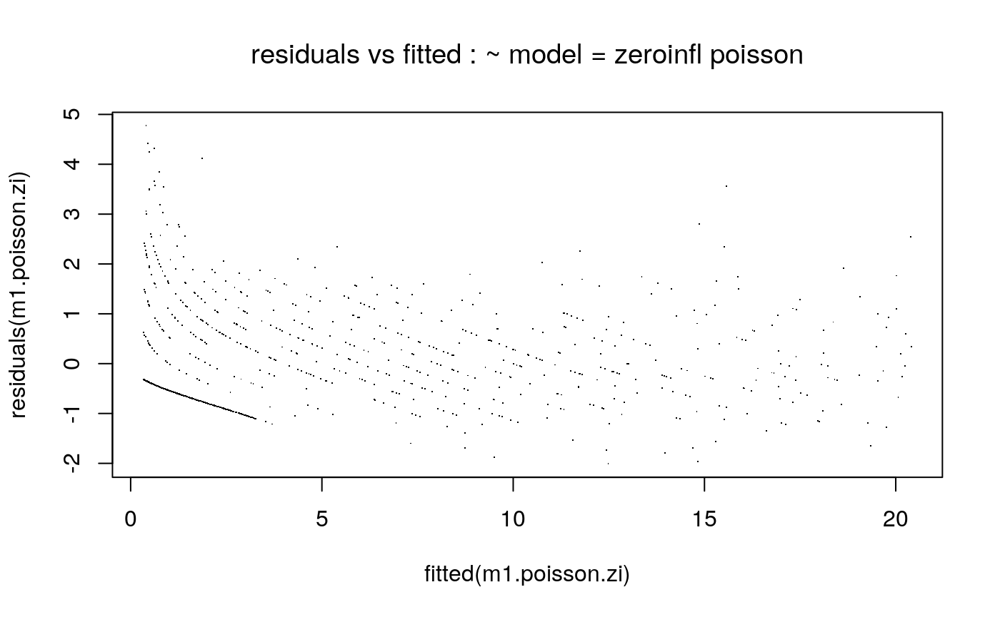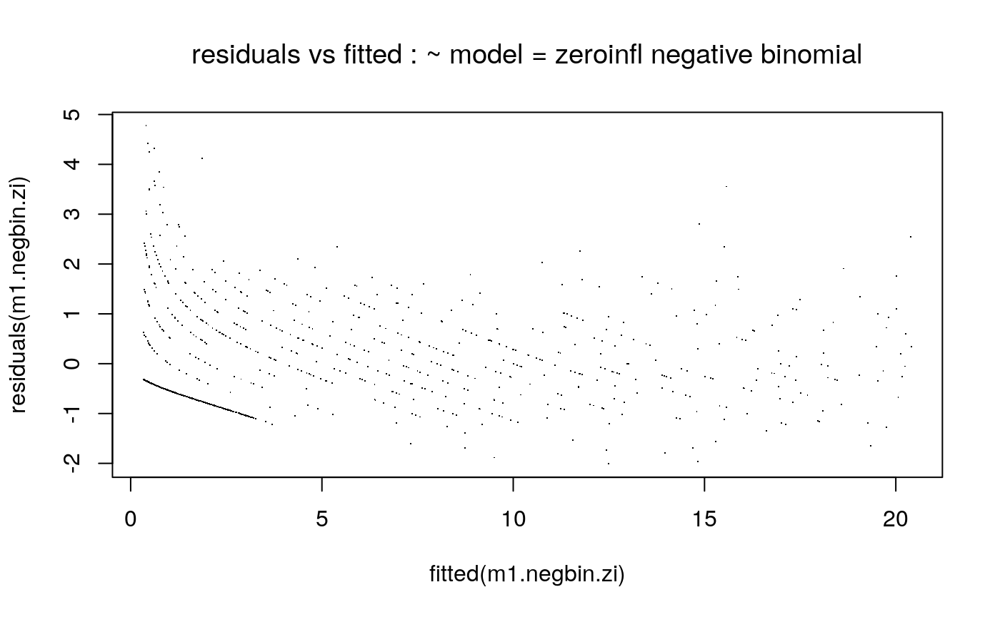
Vuong Non-Nested Hypothesis Test-Statistic:
(test-statistic is asymptotically distributed N(0,1) under the
null that the models are indistinguishible)
-------------------------------------------------------------
Vuong z-statistic H_A p-value
Raw 0.5778354 model1 > model2 0.28169
AIC-corrected 0.5778354 model1 > model2 0.28169
BIC-corrected 0.5778354 model1 > model2 0.28169
NULL#Bibliography
Cameron, Colin. 2012. “Microeconometrics Using Stata, by a. Colin Cameron and Pravin K. Trivedi (Stata Press, College Station, Texas, Usa, 2009), Pp. Xl + 692.” Economic Record 88 (283): 595–96. https://doi.org/10.1111/1475-4932.12006.
Ver Hoef, Jay M., and Peter L. Boveng. 2007. “QUASI-Poisson Vs. NEGATIVE Binomial Regression: HOW Should We Model Overdispersed Count Data?” Ecology 88 (11): 2766–72. https://doi.org/10.1890/07-0043.1.
Vuong, Quang H. 1989. “Likelihood Ratio Tests for Model Selection and Non-Nested Hypotheses.” Econometrica 57 (2). [Wiley, Econometric Society]: 307–33. http://www.jstor.org/stable/1912557.